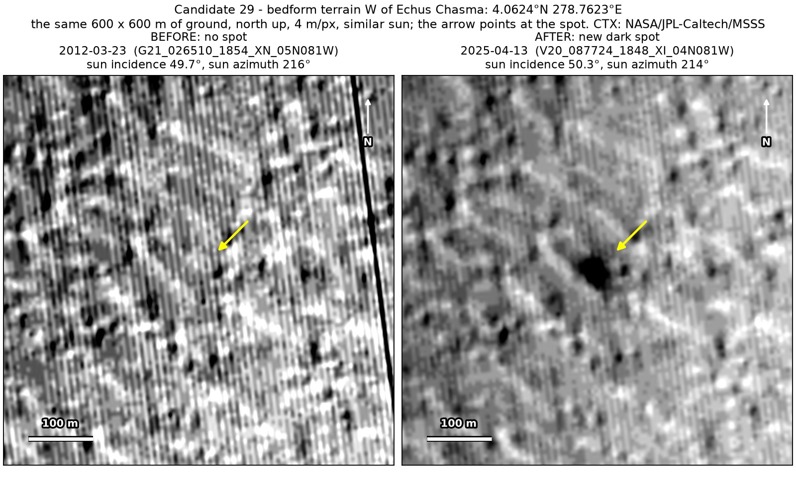
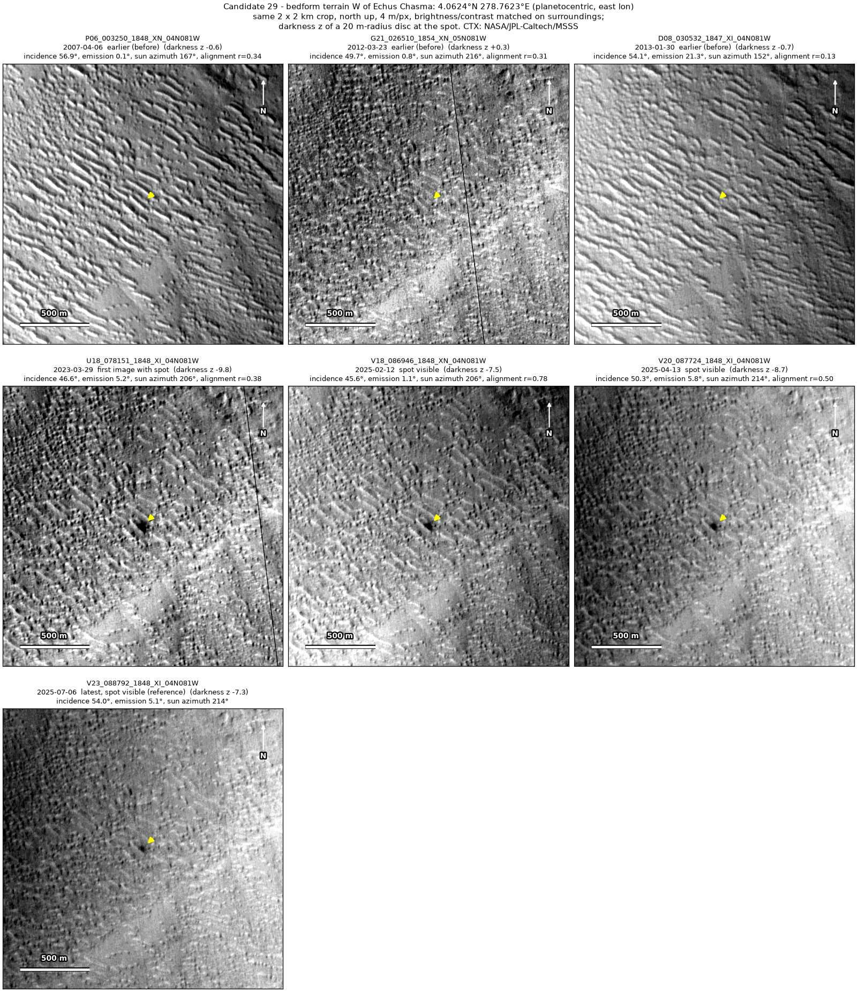
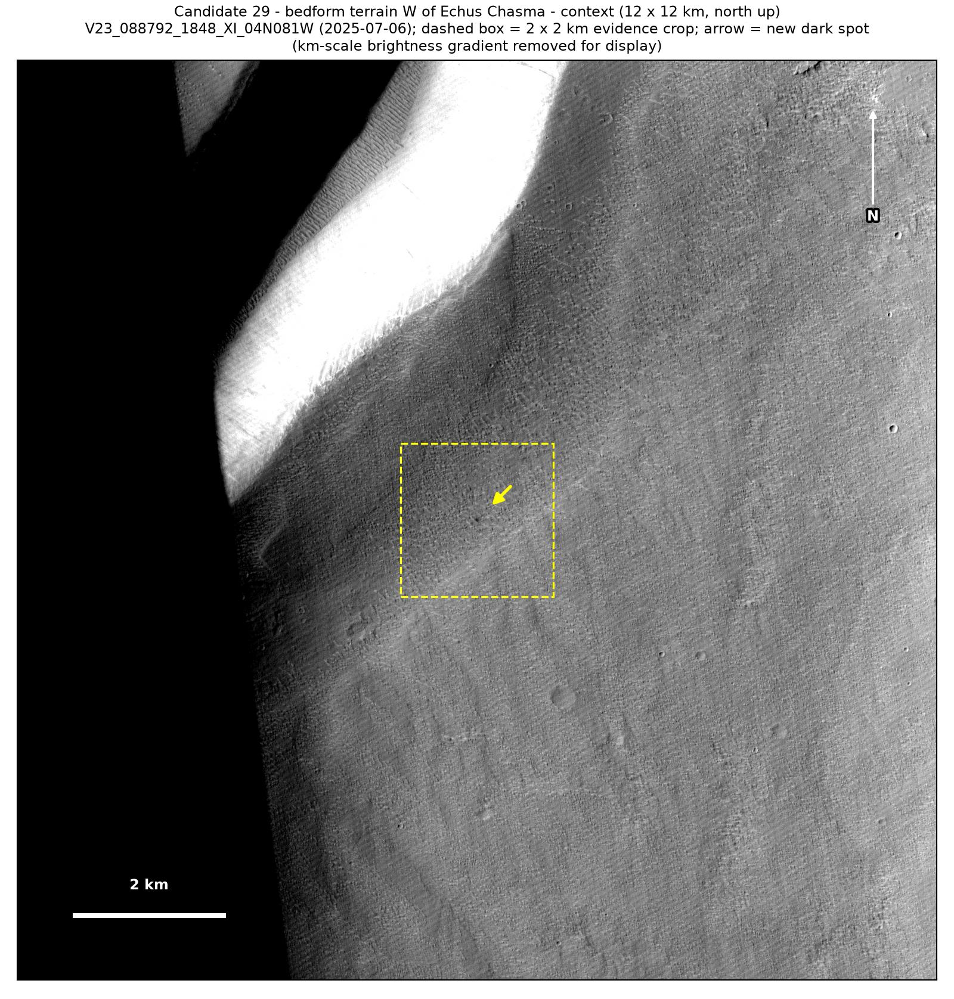
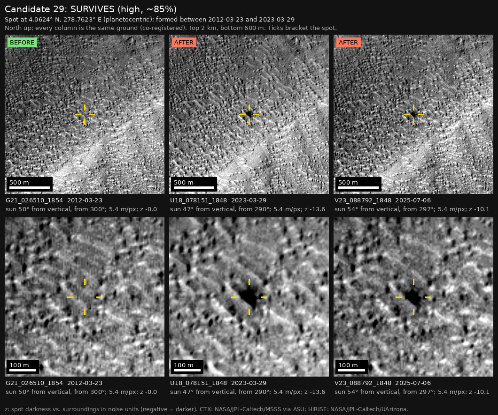

Professor of Mathematics
Paata Ivanisvili
Department of Mathematics, University of California, Irvine

← Possible new impact sites on Mars
Candidate 29: Rippled ground west of Echus Chasma
Strong · roughly 85%

What changed. A compact dark spot about 50 m across appeared on rippled ground west of Echus Chasma, between March 2012 and March 2023. It is in four images from four orbits, from March 2023 to July 2025.
Why it may be a new impact. Images from 2007 and 2012 show nothing there; the 2012 image was taken under the same sun as one from 2025. Dark sand gathering between ripples would follow the ripple pattern, but this spot is round and has not moved or changed in more than two years, while the ripple crests line up in every image.
- Location
- 4.062° N, 278.762° E (81.238° W)
- Absent
- 6 April 2007 and 23 March 2012
- Present
- 29 March 2023, 12 February 2025, 13 April 2025 and 6 July 2025
- Size
- Compact dark spot about 50 m across
- Confidence
- Strong candidate; roughly 85% that it is a new impact.
- Nearby
- Candidate 36, 91 km to the south, first shows in the same image of 29 March 2023, and candidate 32 is about 220 km away. All three are near Echus Chasma, but they are separate events: no single meteoroid scatters craters that far apart.
- Caveat
- It lies outside every footprint of the high-resolution HiRISE camera. Like every candidate here, it is unconfirmed: see the caveat.


